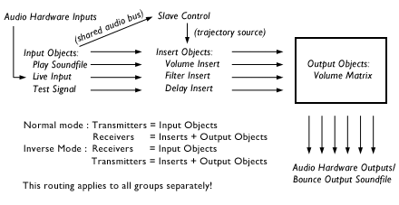

Lisp Plug-In : SuperCollider Amplitude Matrix
this plug-in allows intensity panning between any number of discrete output channels. optionally, a doppler-shift and frequency filtering can be activated. synthesis is made by supercollider. scroll down to see a schematic of the audio routing.
this plug-in works in realtime and offline (bounce) mode. it is installed twice, as "[SC] Amplitude Matrix" and as "[SC] Inverse Matrix". the inverse mode is described further down this document.
plug-in settings
the plug-in has a master-gain field and a toggle that requests supercollider to print incoming OSC messages to its terminal. this is for debugging purposes. the master-gain in decibels will be applied equally to all input objects and adds to their individual gains. when bouncing, additional fields appear for specification of the output sound file and its format. the bounce output will always be multichannel interleaved. the number of channels is calculated from the highest specified output channel of all objects. this calculation includes all objects, no matter if they are muted or not.
session object properties
properties are added for input and output objects. in normal mode, transmitters are input objects and receivers are output objects. this relationship flips in the inverse mode.
input object properties:
- Process : the source of input sound. "Play Soundfile" is used in conjunction with the "Audio In File" field. "Live Input" is used in conjunction with the "Audio In Bus" field. "Test Signal" generates a fixed frequency sine pulse. "Slave Control" is described below.
- Gain : individual input gain ("drive") for this object. Note that the nominal level of test signal objects is -12 dBFS, the gain field here works as an additional amplification (for positive values) or attenuation (for negative values). This field is useless for slave objects.
- Direct Out : If checked, the sound is not routed to a mixing matrix but directly to an output channel specified in the "Direct Out Bus" field. This is also known as "auxiliary" mode and can be used to inject formerly bounced (already spatialized) sounds. To do so, it is convenient to create a separate group consisting only of those aux inputs, because otherwise -- if aux inputs are grouped with matrix output objects -- unnecessary trajectory streaming is performed and CPU power is wasted. It's senseless to put slave control inputs in aux mode.
- Direct Out Bus : this is the output channel of the sound card used for this input object, if -- and only if -- "Direct Out" is checked.
- Audio In File : this field is only used for inputs of process "Play Soundfile". in this case, you specify the path to the soundfile here. Beware to only use mono soundfiles, otherwise supercollider will crash. Also note that when supercollider is run on a different computer in a network, that soundfile must be located on the same computer as supercollider and the pathname is that on the remote computer (therefore, in this case it's useleess to try to select a soundfile by clicking on the folder-icon).
- Audio In Bus : this field is only used for inputs of process "Live Input". in this case, you specify the sound card's input channel to inject into the spatializer, or an internal input channel of Jack when using the Jack audio patch system. Note that it is not possible to use live input when bouncing to disk.
- Slaved to : this field is only used for inputs of process "Slave Control". in this case, you specify the name of the master object. Slaving is described further below.
output object properties:
- Process : the type of processing this object should do. "Volume Matrix" multiplies each input object by the sensitivity cell in matrix formed by that input object and this output object. the output is written to the bus given in the "Audio Out Bus" field. "Volume Insert" works similar, however it doesn't write the output to an interface output but instead replaces the input sound. it therefore operates before any matrix objects and can be used as a global volume controller. All other insert processes work in a similar fashion. "HPF Insert" treats the input with a high pass filter, whereby a sensitivity of zero means no filtering and a sensitivity of 1.0 means filtering at 20 kHz (barely audible). "LPF Insert" works the same but uses a low pass filter. "Delay Insert" is used for doppler shift. It inserts a variable delay line, where a sensitivity of 1.0 (e.g. when a transmitter is located at the center of a sigma receiver) means zero delay, and a sensitivity of 0.0 means maximum delay. The maximum delay is given in the "Delay" field. Therefore, when a transmitter approaches a receiver, the delay time decreasing, resulting in increased pitch; when the transitter passes the receiver and distance increases, the delay time increases as well, resulting in a lower pitch (normal doppler behaviour).
- Audio Out Bus : the soundcard interface channel to which the output will be send. This is only used for process "Volume Matrix".
- Delay : this field is only used for process "Delay Insert". However, in a future version it may be possible to specify a static delay for each output object, therefore it is a good idea to keep this value at 0.0 for all objects other than "Delay Insert". Here is a simply calculation of the delay time for a physical space:
- assume your real room is quadratic and has a width and height of six meters.
s = 6m
- the speed of sound in air be
c = 340m/s
- the delay between a wall and the center of the room is therefore
t = s/(2*c) = circa 9 milliseconds
Therefore, using a receiver of width and height 1.0 which has a uniformly decreasing sensitivity from 1.0 at the center and 0.0 at the boundary, setting delay to 9 milliseconds will accurately simulate the doppler shift in the specified room.
grouping and solo/mute behaviour
all groups are initialized separately after another. this allows you to create sub-matrices or infact completely non-overlapping matrices as a means of overcoming the limitation of not being able to open more than one session at the same time. only groups that are "playing" are initialized. if a group is solo'ed, all other groups are practially muted, unless they are solo'ed as well or made solo-safe. transmitters and receivers in this group are not processed (unless they appear also in a different, playing group).
if the session does not contain any groups, the plug-in assumes one group formed by all receivers and transmitters.
slaving objects
slaving allows you to control sub-matrices with different trajectory sources, though referring to the same input sound. imagine (in normal mode) you have a soundfile playback transmitter -- named "T1" -- and a bunch of receivers using the volume matrix process. imagine now that you want to dynamically apply a high pass filter to this sound. to do so, you create a seperate group with one receiver object that uses the insert filter process. putting the soundfile playback receiver in this group would result in the filter being controlled by the same trajectory that already controls the volume matrix. this can be useful in many cases. however, sometimes you want to control the filter separately. to do so, you put a new transmitter -- named "T2" -- in the group that contains the filtering receiver. this transmitter is set to slave control mode and you put the "master's" name, that is "T1" in the slave's "Slaved to" field. by doing so, the filter will be inserted into the right input channel that belongs to your soundfile playback object.
inverse mode
while usually you will want transmitters to be the sound source objects and receivers to be the filters and output channels, you can also think of an inverted setup. in the inverse mode, receivers are input objects and transmitters are output processors. for example, you set up three receivers as soundfile players and then have two transmitters in matrix volume mode, "scanning" these "sound-fields" and outputing a stereo mix. now imagine the same situation with eight transmitters for eight channel spatialization. two (established) composers immediately reacted the same way, when i explained this inverse mode: "that's just crazy". maybe that reaction is natural, but once you have worked with this mode, you will find it very useful in many situations. and there is nothing wrong in thinking of loudspeakers as devices scanning sound objects, is it?
audio routing schematic
